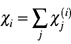

Next: Normal Coordinates
Up: Point Group Theory
Previous: Orientation of the C2v and D2h
Each M.O. is subjected to the operation
from which the expectation value
can readily be calculated.
All c's within a given degenerate manifold are summed:

where j runs over all components of the degenerate manifold i.
This results in a set of characters which can be compared to those stored in
the character tables.
Since molecular orbitals involve single electrons, the irreducible
representations are rendered into lower
case before printing.
J. J. P. Stewart
Fujitsu Ltd. 2001